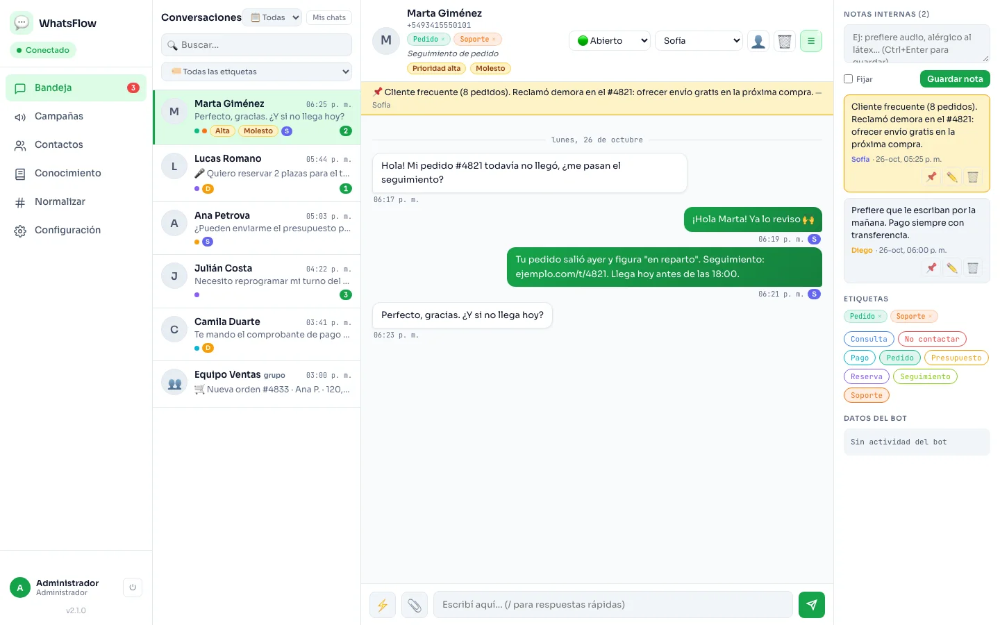
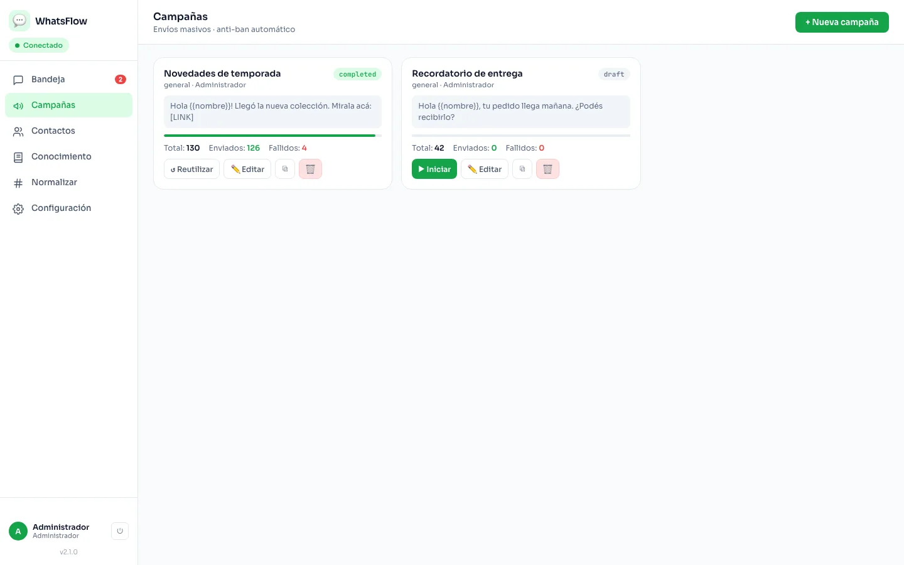
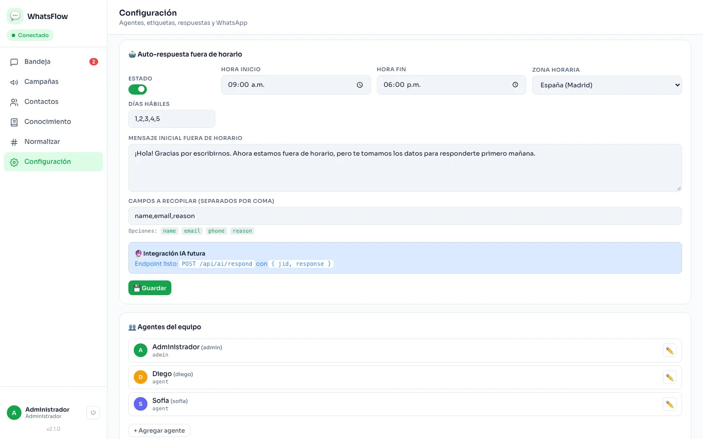
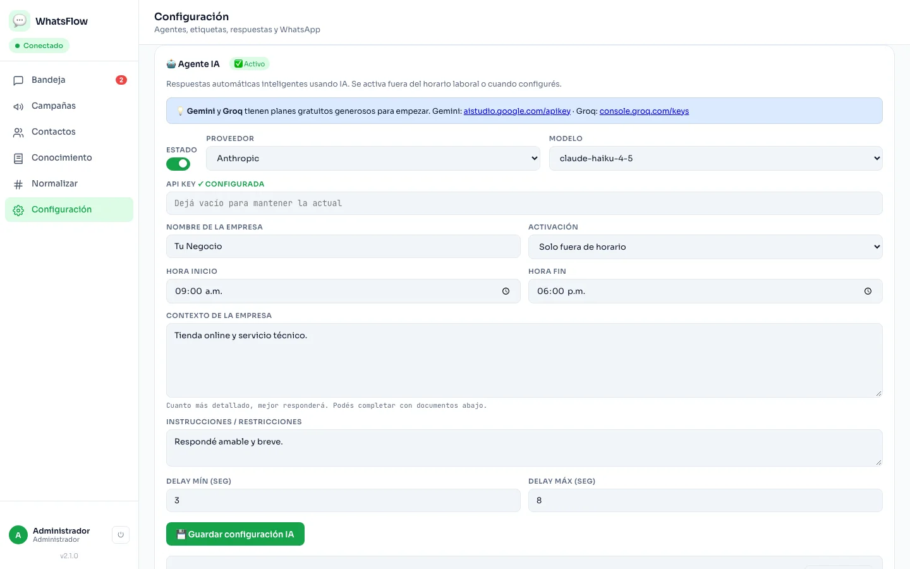
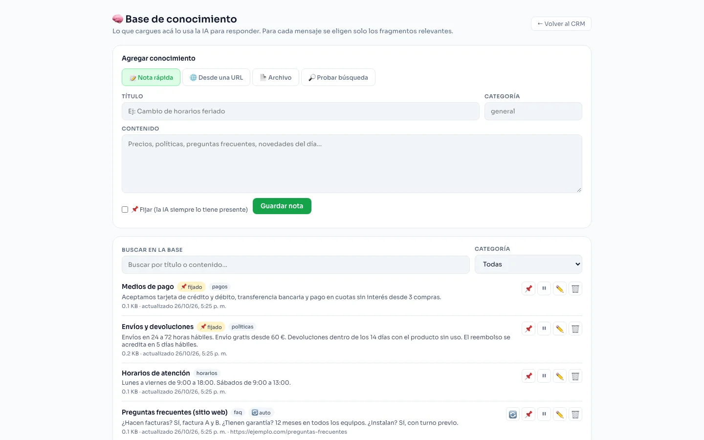

Tienda online
“¿Dónde está mi pedido?” se responde con el seguimiento y la IA marca los reclamos urgentes.
Con la API: cada nueva orden avisa al equipo de ventas.CRM de WhatsApp para equipos
Bandeja multiagente con notas internas y etiquetas. Campañas, chatbot y respuestas automáticas. IA con el proveedor que prefieras. Y una API para que tus sistemas avisen por WhatsApp cuando algo pasa.
La plataforma por dentro
Lo que ves es la plataforma funcionando, con datos de ejemplo.





Casos de uso
No importa el rubro: si tus clientes escriben, WhatsFlow ordena la conversación y automatiza lo repetitivo.
“¿Dónde está mi pedido?” se responde con el seguimiento y la IA marca los reclamos urgentes.
Con la API: cada nueva orden avisa al equipo de ventas.Consultas de disponibilidad, confirmaciones y recordatorios de excursiones, también por audio.
Con la IA: los audios se transcriben y se clasifican solos.Avisos de nuevas inscripciones, información de accesos y comunicación masiva a asistentes.
Con campañas: recordatorios con baja automática.Turnos, reprogramaciones e indicaciones previas, con notas internas para cada paciente.
Con notas: “prefiere mañanas”, visible para todo el equipo.Consultas por propiedad, coordinación de visitas y seguimiento de cada interesado por etiquetas.
Con la IA: respuestas con la ficha de cada inmueble.Presupuestos, estado de reparaciones y reclamos con prioridad, repartidos entre técnicos.
Con asignación: por carga, por turnos o por etiqueta.Informes de cursos, inscripciones y avisos de cambios de horario a toda una comunidad.
Con el chatbot: recoge datos del interesado fuera de horario.Reservas, pedidos y consultas de menú, con respuestas rápidas para lo que se repite todo el día.
Con atajos: “/menu” y “/horarios” en un toque.Campañas y mensajes automáticos
Un chatbot sencillo atiende cuando tu equipo no está, las campañas llegan a muchos clientes sin perder el trato personal, y la IA responde con lo que vos le enseñaste.
Aviso de novedades · campaña completada
126 de 130 enviados · 4 fallidos · límites anti-bloqueo activos
Inteligencia artificial compatible
WhatsFlow no te ata a un proveedor: elegís cuál usar y podés cambiarlo cuando quieras. Cada función se activa por separado.
Los audios entrantes se convierten en texto: se leen de un vistazo, se pueden buscar y la IA los entiende.
Detecta la intención, la prioridad y el ánimo del cliente, y aplica tus etiquetas. Lo urgente se destaca en la bandeja.
Reparte conversaciones por carga, por turnos o según la etiqueta, y deriva a una persona cuando el cliente la pide.
Cargá notas día a día, archivos o pegá una URL. La IA responde solo con lo que cargaste y no inventa.
Formas de conexión
Dos familias: sin API oficial (la de hoy) y con API oficial de Meta. La misma bandeja, las mismas conversaciones y las mismas integraciones en cualquiera de ellas.
Vinculás el número escaneando un QR, como un WhatsApp Web, y empezás a atender en minutos.
Ideal para: empezar, validar y equipos chicos o medianos. Al no ser el canal oficial, tiene más riesgo de bloqueo que la API de Meta.
Conexión por la WhatsApp Business Platform (Cloud API), el canal oficial de Meta.
Ideal para: empresas que escalan o necesitan cumplimiento formal. Requiere alta en Meta y tiene costo por conversación.
Usás la API oficial y seguís con la app WhatsApp Business en el celular, sobre el mismo número.
Ideal para: negocios que ya atienden con la app Business y quieren sumar equipo y automatización.
| Sin API oficial | API oficial (Meta) | Coexistence | |
|---|---|---|---|
| Estado en este CRM | Disponible | Próximamente | Próximamente |
| Puesta en marcha | Minutos, con QR | Alta y verificación en Meta | Alta en Meta + vinculación |
| Escribir primero a un cliente | Libre (con límites anti-bloqueo) | Con plantillas aprobadas | Con plantillas aprobadas |
| Costo de Meta | Ninguno | Por conversación | Por conversación |
| Riesgo de bloqueo | Mayor: canal no oficial | Bajo: canal oficial | Bajo: canal oficial |
| Seguís usando el celular | Sí, como dispositivo vinculado | No con el mismo número | Sí |
Sin letra chica: ninguna herramienta puede garantizar que un número no se bloquee. En modo sin API oficial reducimos el riesgo con límites, pausas y buenas prácticas, pero el canal oficial siempre es el más seguro. Por eso la conexión es intercambiable. Cómo funciona y cómo evitar problemas.
Para tu equipo
Varios operadores en el mismo número, con asignación manual o automática, estados y aviso de quién está viendo cada chat.
Anotá lo que el próximo operador debe saber. Las notas fijadas aparecen sobre el chat y el cliente nunca las ve.
Ordená consultas por tema y respondé en un toque con plantillas y una biblioteca de archivos (PDF, imágenes).
Cola con intervalos naturales, topes distintos para contactos nuevos, horario silencioso, pausa automática ante riesgo y lista de bloqueo.
Cada instalación define su horario de atención y su zona horaria; el bot y la IA los respetan.
Importá contactos desde CSV, normalizá números y atendé también grupos de WhatsApp desde el mismo panel.
Integraciones
Una API simple para que tu tienda, tu plugin o tu ERP envíen mensajes cuando ocurre algo: una nueva orden, un pago, una reserva.
# Nueva orden en tu tienda → aviso al equipo curl -X POST https://tu-instalacion/api/v1/notify \ -H "Authorization: Bearer wak_…" \ -H "Idempotency-Key: order-4833" \ -d '{ "event": "new_order", "data": { "id": 4833, "customer": { "name": "Ana" }, "total": "120.00 EUR" } }' # → 202 Accepted: en cola, con reintentos
Cómo empezar
Instalamos tu panel con tu marca, tu dominio y tus usuarios.
Conectás tu número. Hoy, escaneando un QR. Cuando lo necesites, pasás a la API oficial.
Cargás tu conocimiento (notas, archivos o una URL) y activás la IA que quieras.
Conectás tus sistemas con una API key y empezás a recibir avisos en WhatsApp.
Queremos que sepas exactamente qué estás usando. Esto aplica al modo sin API oficial (QR), que es el disponible hoy.
Queremos que sepas exactamente qué estás usando. Esto aplica al modo sin API oficial (QR), que es el disponible hoy.
WhatsFlow se vincula a tu número como un dispositivo vinculado, igual que WhatsApp Web: escaneás un QR desde Ajustes → Dispositivos vinculados y el sistema usa esa sesión para leer y enviar mensajes. Para eso utiliza una librería de terceros que emula el cliente web de WhatsApp.
Estos límites se pueden ajustar, pero cuanto más los relajes, mayor es el riesgo.
Preguntas frecuentes
No. Hoy podés conectar tu número con un QR, sin trámites. La API oficial y Coexistence están en camino para cuando necesites escalar o formalizar.
En el modo sin API oficial existe ese riesgo, como con cualquier herramienta no oficial. Lo reducimos con límites de envío, pausas automáticas y baja de contactos, pero no se puede garantizar. Para volúmenes altos recomendamos la API oficial.
Sí. En el modo QR el CRM funciona como un dispositivo vinculado. Con Coexistence (próximamente) también podrás usar la app Business sobre el mismo número.
Con OpenAI, Anthropic, Google Gemini y Groq. Usás tu propia API key y elegís el modelo. Cada función de IA (transcripción, clasificación, respuestas) se activa por separado.
Sí. Podés ofrecerlo con tu nombre y tu dominio. Cada instalación es independiente.
El sistema se despliega en tu propio servidor y base de datos. Las claves de IA son tuyas y se usan solo para las funciones que actives.
Escribinos y armamos una propuesta según el tamaño de tu equipo y la forma de conexión.
Te mostramos el panel funcionando y definimos la mejor forma de conexión para tu volumen.